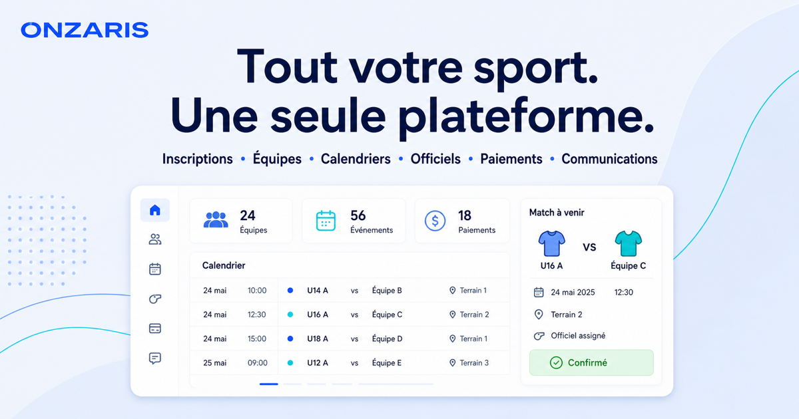

Coordinate teams, venues, fixtures, and the people needed to run each event.
Onzaris
Sports operations in one place.
A platform for leagues, clubs, tournaments, and officials.
Onzaris connects schedules, people, game-day records, payments, and communication so sports organizations can run their work from one operational system.
Operations · one record

One connected seasonFrom fixture to result.
Schedules, people and game-day records in one place.
Product focus
Built around the work between fixtures.
Sports operations are spread across calendars, messages, spreadsheets, and match records. Onzaris brings that context together while keeping organizations in control.
Keep rosters, officials, attendance, and game sheets connected to the match.
Give organizers, coaches, players, parents, and officials a clearer shared record.